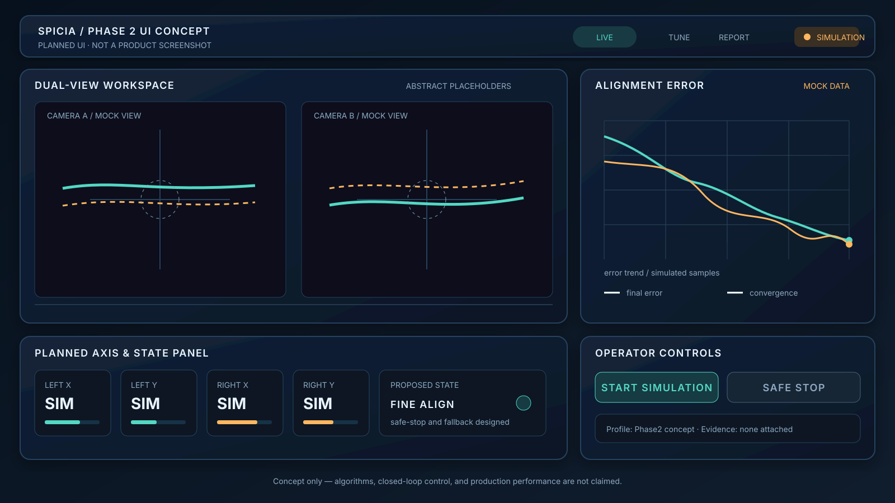

设备发现与 RAW 输出检查
分别整理设备发现、媒体拓扑和 RAW 输出记录，用于区分相机、驱动及应用层问题。
项目 / 04
Splicia
Linux 与 IMX296 相机调试记录，涉及设备发现、媒体拓扑和 RAW 输出。当前工作集中于平台与采集链路，后续视觉、运动及界面模块另行规划。
Embedded Linux · IMX296 · Media topology · RAW
01 / 项目背景
相机输出涉及设备、驱动、媒体管线和应用等环节。当前按层记录设备发现、拓扑配置及 RAW 数据，分析图像输出异常的来源，为后续视觉处理提供基础。
02 / 实现要点
分别整理设备发现、媒体拓扑和 RAW 输出记录，用于区分相机、驱动及应用层问题。
下一阶段规划采集、视觉、状态估计、运动控制、UI、日志及回放等模块，明确职责与依赖。这些内容目前属于架构设计。
设计稿用于讨论第二阶段的布局与信息组织。图像、曲线及数值均为占位内容，不代表运行界面或测试结果。

03 / 公开资料
04 / 范围与限制
当前已记录的工作限于 Linux 平台与相机调试。视觉几何提取、标定双目融合、多轴运动及闭环对准尚未完成；公开内容不含客户资料、旧产品或私有实现。